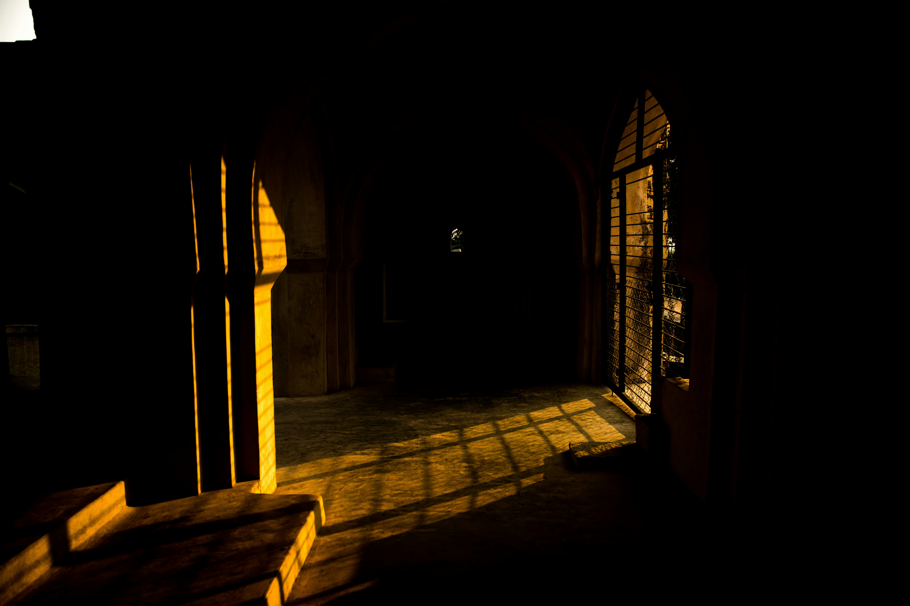

source: unsplash
À l'interieur, le château est immense et sombre.
Tu dois choisir rapidement par où commencer tes recherches.

À l'interieur, le château est immense et sombre.
Tu dois choisir rapidement par où commencer tes recherches.